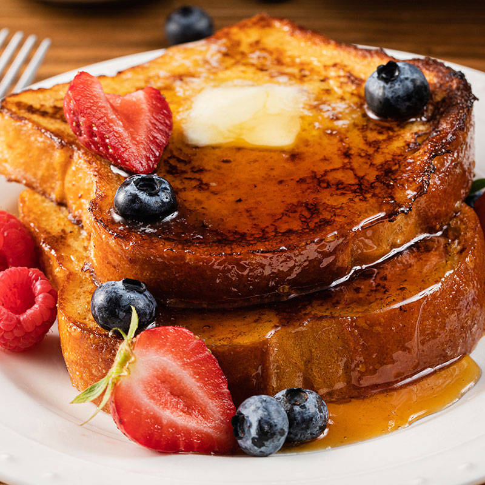

French Toast
Description
Easy French Toast recipe. Add fruits of your choice if you're into that kind of thing.
Ingredients
- 1 - Loaf Bread (cinnamon bread, brioche bread, french bread, sourdough, Texas toast etc.).
- 4 - Eggs
- 1 Tbsp Light Brown Sugar
- ¼ tsp - Sea Salt
- 1 tsp - Pure Vanilla Extract
- ½ tsp - Ground Cinnamon
- 1 ½ cups - Whole Milk
- Butter for skillet (or non-stick cooking spray)
Directions
- In a medium mixing bowl, whisk together eggs.
- Add brown sugar, sea salt, vanilla and cinnamon and whisk until combined.
- Add milk and whisk until combined.
- Pour into a shallow baking dish (9×9)
- Place bread in the egg mixture and let it soak in the mixture for 10-15 seconds.
- Flip bread over and repeat on the other side.
- Cook for 3-5 minutes on each side or until golden brown.